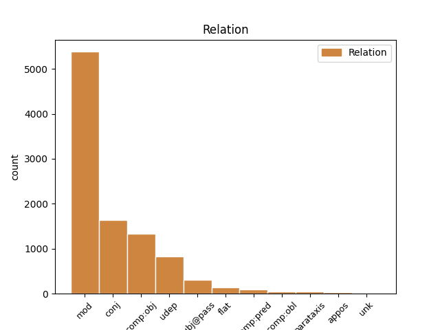
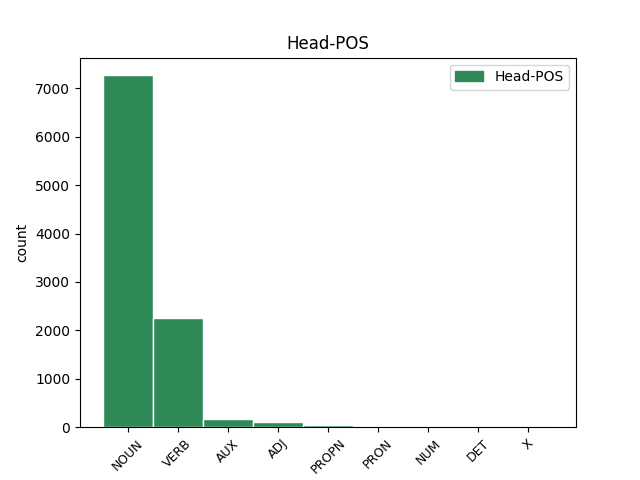
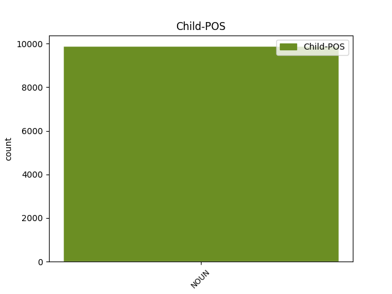

Distribution of features within this leaf



Agreement Rules sorted by frequency.
- When the dependent token is the modifer(mod) of the head token, and the dependent token is NOUN.
1 Ginčai _ _ _ _ 0 _ _ _
2 dėl _ _ _ _ 0 _ _ _
3 šio _ _ _ _ 0 _ _ _
4 reglamento reglamentas NOUN dkt.vyr.vns.K. Case=Gen|Gender=Masc|Number=Sing 5 mod _ _
5 taikymo taikymas NOUN dkt.vyr.vns.K. Case=Gen|Gender=Masc|Number=Sing 0 _ _ _
6 nagrinėjami _ _ _ _ 0 _ _ _
7 įstatymų _ _ _ _ 0 _ _ _
8 nustatyta _ _ _ _ 0 _ _ _
9 tvarka _ _ _ _ 0 _ _ _
10 . _ _ _ _ 0 _ _ _
1 VII _ _ _ _ 0 _ _ _
2 . _ _ _ _ 0 _ _ _
3 KOMITETO _ _ _ _ 0 _ _ _
4 VEIKLOS _ _ _ _ 0 _ _ _
5 KONTROLĖ kontrolė NOUN dkt.mot.vns.V. Case=Nom|Gender=Fem|Number=Sing 0 _ _ _
6 IR _ _ _ _ 0 _ _ _
7 ATSAKOMYBĖ atsakomybė NOUN dkt.mot.vns.V. Case=Nom|Gender=Fem|Number=Sing 5 conj _ _
1 Komiteto _ _ _ _ 0 _ _ _
2 veiklos _ _ _ _ 0 _ _ _
3 kontrolę kontrolė NOUN dkt.mot.vns.G. Case=Acc|Gender=Fem|Number=Sing 4 comp:obj _ _
4 vykdo vykdyti VERB vksm.asm.tiesiog.es.vns.3. Mood=Ind|Number=Sing|Person=3|Polarity=Pos|Tense=Pres|VerbForm=Fin 0 _ _ _
5 Aplinkos _ _ _ _ 0 _ _ _
6 ministerija _ _ _ _ 0 _ _ _
7 . _ _ _ _ 0 _ _ _
1 23 _ _ _ _ 0 _ _ _
2 . _ _ _ _ 0 _ _ _
3 Kalendoriniams _ _ _ _ 0 _ _ _
4 metams _ _ _ _ 0 _ _ _
5 pasibaigus _ _ _ _ 0 _ _ _
6 , _ _ _ _ 0 _ _ _
7 Komiteto _ _ _ _ 0 _ _ _
8 sekretorius _ _ _ _ 0 _ _ _
9 turimus _ _ _ _ 0 _ _ _
10 dokumentus _ _ _ _ 0 _ _ _
11 , _ _ _ _ 0 _ _ _
12 susijusius _ _ _ _ 0 _ _ _
13 su _ _ _ _ 0 _ _ _
14 Komiteto _ _ _ _ 0 _ _ _
15 posėdžiais _ _ _ _ 0 _ _ _
16 , _ _ _ _ 0 _ _ _
17 perduoda _ _ _ _ 0 _ _ _
18 saugoti _ _ _ _ 0 _ _ _
19 Aplinkos _ _ _ _ 0 _ _ _
20 ministerijai _ _ _ _ 0 _ _ _
21 , _ _ _ _ 0 _ _ _
22 kur _ _ _ _ 0 _ _ _
23 jie _ _ _ _ 0 _ _ _
24 saugomi saugoti VERB vksm.dlv.neveik.es.vyr.dgs.V. Case=Nom|Definite=Ind|Gender=Masc|Number=Plur|Polarity=Pos|Tense=Pres|VerbForm=Part|Voice=Pass 0 _ _ _
25 5 _ _ _ _ 0 _ _ _
26 metus metai NOUN dkt.vyr.dgs.G. Case=Acc|Gender=Masc|Number=Plur 24 udep _ SpaceAfter=No
27 , _ _ _ _ 0 _ _ _
28 vadovaujantis _ _ _ _ 0 _ _ _
29 Lietuvos _ _ _ _ 0 _ _ _
30 archyvų _ _ _ _ 0 _ _ _
31 departamento _ _ _ _ 0 _ _ _
32 prie _ _ _ _ 0 _ _ _
33 Lietuvos _ _ _ _ 0 _ _ _
34 Respublikos _ _ _ _ 0 _ _ _
35 Vyriausybės _ _ _ _ 0 _ _ _
36 1997 _ _ _ _ 0 _ _ _
37 m _ _ _ _ 0 _ _ _
38 . _ _ _ _ 0 _ _ _
39 rugpjūčio _ _ _ _ 0 _ _ _
40 15 _ _ _ _ 0 _ _ _
41 d _ _ _ _ 0 _ _ _
42 . _ _ _ _ 0 _ _ _
43 įsakymu _ _ _ _ 0 _ _ _
44 Nr _ _ _ _ 0 _ _ _
45 . _ _ _ _ 0 _ _ _
46 38 _ _ _ _ 0 _ _ _
47 „ _ _ _ _ 0 _ _ _
48 Dėl _ _ _ _ 0 _ _ _
49 bendrųjų _ _ _ _ 0 _ _ _
50 dokumentų _ _ _ _ 0 _ _ _
51 saugojimo _ _ _ _ 0 _ _ _
52 terminų _ _ _ _ 0 _ _ _
53 “ _ _ _ _ 0 _ _ _
54 ( _ _ _ _ 0 _ _ _
55 Žin _ _ _ _ 0 _ _ _
56 . _ _ _ _ 0 _ _ _
57 , _ _ _ _ 0 _ _ _
58 1997 _ _ _ _ 0 _ _ _
59 , _ _ _ _ 0 _ _ _
60 Nr _ _ _ _ 0 _ _ _
61 . _ _ _ _ 0 _ _ _
62 78-006 _ _ _ _ 0 _ _ _
63 ) _ _ _ _ 0 _ _ _
64 . _ _ _ _ 0 _ _ _
1 Ginčai ginčas NOUN dkt.vyr.dgs.V. Case=Nom|Gender=Masc|Number=Plur 6 subj@pass _ _
2 dėl _ _ _ _ 0 _ _ _
3 šio _ _ _ _ 0 _ _ _
4 reglamento _ _ _ _ 0 _ _ _
5 taikymo _ _ _ _ 0 _ _ _
6 nagrinėjami nagrinėti VERB vksm.dlv.neveik.es.vyr.dgs.V. Case=Nom|Definite=Ind|Gender=Masc|Number=Plur|Polarity=Pos|Tense=Pres|VerbForm=Part|Voice=Pass 0 _ _ _
7 įstatymų _ _ _ _ 0 _ _ _
8 nustatyta _ _ _ _ 0 _ _ _
9 tvarka _ _ _ _ 0 _ _ _
10 . _ _ _ _ 0 _ _ _
1 Ataskaita _ _ _ _ 0 _ _ _
2 apie _ _ _ _ 0 _ _ _
3 tyrimą _ _ _ _ 0 _ _ _
4 privačiame _ _ _ _ 0 _ _ _
5 sveikatos _ _ _ _ 0 _ _ _
6 draudimo _ _ _ _ 0 _ _ _
7 sektoriuje _ _ _ _ 0 _ _ _
8 Europos _ _ _ _ 0 _ _ _
9 Sąjungos _ _ _ _ 0 _ _ _
10 mastu _ _ _ _ 0 _ _ _
11 bus _ _ _ _ 0 _ _ _
12 pateikta _ _ _ _ 0 _ _ _
13 2007 _ _ _ _ 0 _ _ _
14 m _ _ _ _ 0 _ _ _
15 . _ _ _ _ 0 _ _ _
16 apibendrinus _ _ _ _ 0 _ _ _
17 visų _ _ _ _ 0 _ _ _
18 Europos _ _ _ _ 0 _ _ _
19 Sąjungos _ _ _ _ 0 _ _ _
20 valstybių valstybė NOUN dkt.mot.dgs.K. Case=Gen|Gender=Fem|Number=Plur 0 _ _ _
21 narių narė NOUN dkt.mot.dgs.K. Case=Gen|Gender=Fem|Number=Plur 20 flat _ _
22 nacionalinių _ _ _ _ 0 _ _ _
23 duomenų _ _ _ _ 0 _ _ _
24 apsaugos _ _ _ _ 0 _ _ _
25 priežiūros _ _ _ _ 0 _ _ _
26 institucijų _ _ _ _ 0 _ _ _
27 pateiktas _ _ _ _ 0 _ _ _
28 ataskaitas _ _ _ _ 0 _ _ _
29 . _ _ _ _ 0 _ _ _
1 Dėl _ _ _ _ 0 _ _ _
2 šių _ _ _ _ 0 _ _ _
3 priežasčių _ _ _ _ 0 _ _ _
4 , _ _ _ _ 0 _ _ _
5 taip _ _ _ _ 0 _ _ _
6 pat _ _ _ _ 0 _ _ _
7 dėl _ _ _ _ 0 _ _ _
8 mažų _ _ _ _ 0 _ _ _
9 valstybės _ _ _ _ 0 _ _ _
10 tarnautojų _ _ _ _ 0 _ _ _
11 atlyginimų _ _ _ _ 0 _ _ _
12 ( _ _ _ _ 0 _ _ _
13 įstaiga _ _ _ _ 0 _ _ _
14 iki _ _ _ _ 0 _ _ _
15 šiol _ _ _ _ 0 _ _ _
16 yra _ _ _ _ 0 _ _ _
17 priskiriama _ _ _ _ 0 _ _ _
18 III _ _ _ _ 0 _ _ _
19 grupei _ _ _ _ 0 _ _ _
20 , _ _ _ _ 0 _ _ _
21 nors _ _ _ _ 0 _ _ _
22 Inspekcija _ _ _ _ 0 _ _ _
23 atitinka _ _ _ _ 0 _ _ _
24 II _ _ _ _ 0 _ _ _
25 grupės _ _ _ _ 0 _ _ _
26 kriterijus _ _ _ _ 0 _ _ _
27 ) _ _ _ _ 0 _ _ _
28 , _ _ _ _ 0 _ _ _
29 Inspekcijoje _ _ _ _ 0 _ _ _
30 buvo būti AUX vksm.asm.tiesiog.būt-k.vns.3. Aspect=Perf|Mood=Ind|Number=Sing|Person=3|Polarity=Pos|Tense=Past|VerbForm=Fin 0 _ _ _
31 didelė _ _ _ _ 0 _ _ _
32 personalo _ _ _ _ 0 _ _ _
33 kaita kaita NOUN dkt.mot.vns.V. Case=Nom|Gender=Fem|Number=Sing 30 comp:pred _ SpaceAfter=No
34 , _ _ _ _ 0 _ _ _
35 nes _ _ _ _ 0 _ _ _
36 dirba _ _ _ _ 0 _ _ _
37 aukštos _ _ _ _ 0 _ _ _
38 kvalifikacijos _ _ _ _ 0 _ _ _
39 specialistai _ _ _ _ 0 _ _ _
40 , _ _ _ _ 0 _ _ _
41 kurie _ _ _ _ 0 _ _ _
42 yra _ _ _ _ 0 _ _ _
43 laukiami _ _ _ _ 0 _ _ _
44 ir _ _ _ _ 0 _ _ _
45 kitose _ _ _ _ 0 _ _ _
46 valstybės _ _ _ _ 0 _ _ _
47 ir _ _ _ _ 0 _ _ _
48 privačiose _ _ _ _ 0 _ _ _
49 struktūrose _ _ _ _ 0 _ _ _
50 . _ _ _ _ 0 _ _ _
1 14 _ _ _ _ 0 _ _ _
2 . _ _ _ _ 0 _ _ _
3 Komiteto _ _ _ _ 0 _ _ _
4 posėdžiams _ _ _ _ 0 _ _ _
5 pirmininkauja _ _ _ _ 0 _ _ _
6 Komiteto _ _ _ _ 0 _ _ _
7 pirmininkas _ _ _ _ 0 _ _ _
8 , _ _ _ _ 0 _ _ _
9 o _ _ _ _ 0 _ _ _
10 jei _ _ _ _ 0 _ _ _
11 jo _ _ _ _ 0 _ _ _
12 nėra nebūti VERB vksm.asm.neig.tiesiog.es.vns.3. Mood=Ind|Number=Sing|Person=3|Polarity=Neg|Tense=Pres|VerbForm=Fin 0 _ _ _
13 - _ _ _ _ 0 _ _ _
14 Komiteto _ _ _ _ 0 _ _ _
15 pirmininko _ _ _ _ 0 _ _ _
16 pavaduotojas pavaduotojas NOUN dkt.vyr.vns.V. Case=Nom|Gender=Masc|Number=Sing 12 appos _ SpaceAfter=No
17 . _ _ _ _ 0 _ _ _
1 Teikia teikti VERB vksm.asm.tiesiog.es.vns.3. Mood=Ind|Number=Sing|Person=3|Polarity=Pos|Tense=Pres|VerbForm=Fin 0 _ _ _
2 pasiūlymus _ _ _ _ 0 _ _ _
3 Aplinkos _ _ _ _ 0 _ _ _
4 ministerijai ministerija NOUN dkt.mot.vns.N. Case=Dat|Gender=Fem|Number=Sing 1 comp:obl _ _
5 dėl _ _ _ _ 0 _ _ _
6 lėšų _ _ _ _ 0 _ _ _
7 naudojimo _ _ _ _ 0 _ _ _
8 ir _ _ _ _ 0 _ _ _
9 jų _ _ _ _ 0 _ _ _
10 poreikio _ _ _ _ 0 _ _ _
11 kitiems _ _ _ _ 0 _ _ _
12 finansiniams _ _ _ _ 0 _ _ _
13 metams _ _ _ _ 0 _ _ _
14 ; _ _ _ _ 0 _ _ _
1 3 _ _ _ _ 0 _ _ _
2 . _ _ _ _ 0 _ _ _
3 Komiteto _ _ _ _ 0 _ _ _
4 sprendimai _ _ _ _ 0 _ _ _
5 Aplinkos _ _ _ _ 0 _ _ _
6 ministerijai _ _ _ _ 0 _ _ _
7 ir _ _ _ _ 0 _ _ _
8 kitiems _ _ _ _ 0 _ _ _
9 Programos _ _ _ _ 0 _ _ _
10 dalyviams _ _ _ _ 0 _ _ _
11 ( _ _ _ _ 0 _ _ _
12 tame _ _ _ _ 0 _ _ _
13 tarpe tarpas NOUN dkt.vyr.vns.Vt. Case=Loc|Gender=Masc|Number=Sing 16 parataxis _ _
14 Programą _ _ _ _ 0 _ _ _
15 įgyvendinančiai _ _ _ _ 0 _ _ _
16 agentūrai agentūra NOUN dkt.mot.vns.N. Case=Dat|Gender=Fem|Number=Sing 0 _ _ _
17 ) _ _ _ _ 0 _ _ _
18 yra _ _ _ _ 0 _ _ _
19 patariamojo _ _ _ _ 0 _ _ _
20 pobūdžio _ _ _ _ 0 _ _ _
21 . _ _ _ _ 0 _ _ _
1 Programos _ _ _ _ 0 _ _ _
2 vykdymo _ _ _ _ 0 _ _ _
3 rezultato _ _ _ _ 0 _ _ _
4 vertinimo _ _ _ _ 0 _ _ _
5 kriterijus _ _ _ _ 0 _ _ _
6 yra _ _ _ _ 0 _ _ _
7 padidėjęs _ _ _ _ 0 _ _ _
8 duomenų _ _ _ _ 0 _ _ _
9 valdytojų _ _ _ _ 0 _ _ _
10 , _ _ _ _ 0 _ _ _
11 siekiančių _ _ _ _ 0 _ _ _
12 tinkamai _ _ _ _ 0 _ _ _
13 įgyvendinti _ _ _ _ 0 _ _ _
14 duomenų _ _ _ _ 0 _ _ _
15 apsaugos _ _ _ _ 0 _ _ _
16 reikalavimus _ _ _ _ 0 _ _ _
17 , _ _ _ _ 0 _ _ _
18 kreipimųsi _ _ _ _ 0 _ _ _
19 į _ _ _ _ 0 _ _ _
20 Inspekciją _ _ _ _ 0 _ _ _
21 skaičius _ _ _ _ 0 _ _ _
22 ( _ _ _ _ 0 _ _ _
23 padidėjimas padidėjimas NOUN dkt.vyr.vns.V. Case=Nom|Gender=Masc|Number=Sing 24 unk _ _
24 skaičiuojamas skaičiuoti VERB vksm.dlv.neveik.es.vyr.vns.V. Case=Nom|Definite=Ind|Gender=Masc|Number=Sing|Polarity=Pos|Tense=Pres|VerbForm=Part|Voice=Pass 0 _ _ _
25 procentais _ _ _ _ 0 _ _ _
26 ir _ _ _ _ 0 _ _ _
27 lyginamas _ _ _ _ 0 _ _ _
28 su _ _ _ _ 0 _ _ _
29 2005 _ _ _ _ 0 _ _ _
30 m _ _ _ _ 0 _ _ _
31 . _ _ _ _ 0 _ _ _
32 ) _ _ _ _ 0 _ _ _
33 . _ _ _ _ 0 _ _ _
Disagree Examples:
1 Siekiant _ _ _ _ 0 _ _ _
2 skaidrumo _ _ _ _ 0 _ _ _
3 ir _ _ _ _ 0 _ _ _
4 viešumo _ _ _ _ 0 _ _ _
5 siūloma _ _ _ _ 0 _ _ _
6 viešinti _ _ _ _ 0 _ _ _
7 universitetų _ _ _ _ 0 _ _ _
8 rektorių rektorius NOUN dkt.vyr.dgs.K. Case=Gen|Gender=Masc|Number=Plur 23 mod _ SpaceAfter=No
9 , _ _ _ _ 0 _ _ _
10 fakultetų _ _ _ _ 0 _ _ _
11 , _ _ _ _ 0 _ _ _
12 institutų _ _ _ _ 0 _ _ _
13 vadovų _ _ _ _ 0 _ _ _
14 ir _ _ _ _ 0 _ _ _
15 kitų _ _ _ _ 0 _ _ _
16 aukštas _ _ _ _ 0 _ _ _
17 pareigas _ _ _ _ 0 _ _ _
18 mokslo _ _ _ _ 0 _ _ _
19 įstaigose _ _ _ _ 0 _ _ _
20 užimančių _ _ _ _ 0 _ _ _
21 asmenų _ _ _ _ 0 _ _ _
22 darbo _ _ _ _ 0 _ _ _
23 užmokestį užmokestis NOUN dkt.vyr.vns.G. Case=Acc|Gender=Masc|Number=Sing 0 _ _ _
24 ir _ _ _ _ 0 _ _ _
25 kitas _ _ _ _ 0 _ _ _
26 pajamas _ _ _ _ 0 _ _ _
27 . _ _ _ _ 0 _ _ _
1 Siekiant _ _ _ _ 0 _ _ _
2 skaidrumo _ _ _ _ 0 _ _ _
3 ir _ _ _ _ 0 _ _ _
4 viešumo _ _ _ _ 0 _ _ _
5 siūloma _ _ _ _ 0 _ _ _
6 viešinti _ _ _ _ 0 _ _ _
7 universitetų _ _ _ _ 0 _ _ _
8 rektorių _ _ _ _ 0 _ _ _
9 , _ _ _ _ 0 _ _ _
10 fakultetų _ _ _ _ 0 _ _ _
11 , _ _ _ _ 0 _ _ _
12 institutų _ _ _ _ 0 _ _ _
13 vadovų _ _ _ _ 0 _ _ _
14 ir _ _ _ _ 0 _ _ _
15 kitų _ _ _ _ 0 _ _ _
16 aukštas _ _ _ _ 0 _ _ _
17 pareigas _ _ _ _ 0 _ _ _
18 mokslo mokslas NOUN dkt.vyr.vns.K. Case=Gen|Gender=Masc|Number=Sing 19 mod _ _
19 įstaigose įstaiga NOUN dkt.mot.dgs.Vt. Case=Loc|Gender=Fem|Number=Plur 0 _ _ _
20 užimančių _ _ _ _ 0 _ _ _
21 asmenų _ _ _ _ 0 _ _ _
22 darbo _ _ _ _ 0 _ _ _
23 užmokestį _ _ _ _ 0 _ _ _
24 ir _ _ _ _ 0 _ _ _
25 kitas _ _ _ _ 0 _ _ _
26 pajamas _ _ _ _ 0 _ _ _
27 . _ _ _ _ 0 _ _ _
1 Siekiant _ _ _ _ 0 _ _ _
2 skaidrumo _ _ _ _ 0 _ _ _
3 ir _ _ _ _ 0 _ _ _
4 viešumo _ _ _ _ 0 _ _ _
5 siūloma _ _ _ _ 0 _ _ _
6 viešinti _ _ _ _ 0 _ _ _
7 universitetų _ _ _ _ 0 _ _ _
8 rektorių _ _ _ _ 0 _ _ _
9 , _ _ _ _ 0 _ _ _
10 fakultetų _ _ _ _ 0 _ _ _
11 , _ _ _ _ 0 _ _ _
12 institutų _ _ _ _ 0 _ _ _
13 vadovų _ _ _ _ 0 _ _ _
14 ir _ _ _ _ 0 _ _ _
15 kitų _ _ _ _ 0 _ _ _
16 aukštas _ _ _ _ 0 _ _ _
17 pareigas _ _ _ _ 0 _ _ _
18 mokslo _ _ _ _ 0 _ _ _
19 įstaigose _ _ _ _ 0 _ _ _
20 užimančių _ _ _ _ 0 _ _ _
21 asmenų _ _ _ _ 0 _ _ _
22 darbo _ _ _ _ 0 _ _ _
23 užmokestį užmokestis NOUN dkt.vyr.vns.G. Case=Acc|Gender=Masc|Number=Sing 0 _ _ _
24 ir _ _ _ _ 0 _ _ _
25 kitas _ _ _ _ 0 _ _ _
26 pajamas pajamos NOUN dkt.mot.dgs.G. Case=Acc|Gender=Fem|Number=Plur 23 conj _ SpaceAfter=No
27 . _ _ _ _ 0 _ _ _
1 Anot _ _ _ _ 0 _ _ _
2 Seimo _ _ _ _ 0 _ _ _
3 nario _ _ _ _ 0 _ _ _
4 Manto _ _ _ _ 0 _ _ _
5 Adomėno _ _ _ _ 0 _ _ _
6 , _ _ _ _ 0 _ _ _
7 dabartinės _ _ _ _ 0 _ _ _
8 aukštųjų _ _ _ _ 0 _ _ _
9 mokyklų _ _ _ _ 0 _ _ _
10 vadovų _ _ _ _ 0 _ _ _
11 algos _ _ _ _ 0 _ _ _
12 sunkmečiu sunkmetis NOUN dkt.vyr.vns.Įn. Case=Ins|Gender=Masc|Number=Sing 13 udep _ _
13 kelia kelti VERB vksm.asm.tiesiog.es.dgs.3. Mood=Ind|Number=Plur|Person=3|Polarity=Pos|Tense=Pres|VerbForm=Fin 0 _ _ _
14 visuotinį _ _ _ _ 0 _ _ _
15 pasipiktinimą _ _ _ _ 0 _ _ _
16 , _ _ _ _ 0 _ _ _
17 derėtų _ _ _ _ 0 _ _ _
18 universitetų _ _ _ _ 0 _ _ _
19 vadovų _ _ _ _ 0 _ _ _
20 pajamas _ _ _ _ 0 _ _ _
21 viešinti _ _ _ _ 0 _ _ _
22 . _ _ _ _ 0 _ _ _
1 Anot _ _ _ _ 0 _ _ _
2 Seimo _ _ _ _ 0 _ _ _
3 nario _ _ _ _ 0 _ _ _
4 Manto _ _ _ _ 0 _ _ _
5 Adomėno _ _ _ _ 0 _ _ _
6 , _ _ _ _ 0 _ _ _
7 dabartinės _ _ _ _ 0 _ _ _
8 aukštųjų _ _ _ _ 0 _ _ _
9 mokyklų _ _ _ _ 0 _ _ _
10 vadovų _ _ _ _ 0 _ _ _
11 algos _ _ _ _ 0 _ _ _
12 sunkmečiu _ _ _ _ 0 _ _ _
13 kelia kelti VERB vksm.asm.tiesiog.es.dgs.3. Mood=Ind|Number=Plur|Person=3|Polarity=Pos|Tense=Pres|VerbForm=Fin 0 _ _ _
14 visuotinį _ _ _ _ 0 _ _ _
15 pasipiktinimą pasipiktinimas NOUN dkt.vyr.vns.G. Case=Acc|Gender=Masc|Number=Sing 13 comp:obj _ SpaceAfter=No
16 , _ _ _ _ 0 _ _ _
17 derėtų _ _ _ _ 0 _ _ _
18 universitetų _ _ _ _ 0 _ _ _
19 vadovų _ _ _ _ 0 _ _ _
20 pajamas _ _ _ _ 0 _ _ _
21 viešinti _ _ _ _ 0 _ _ _
22 . _ _ _ _ 0 _ _ _